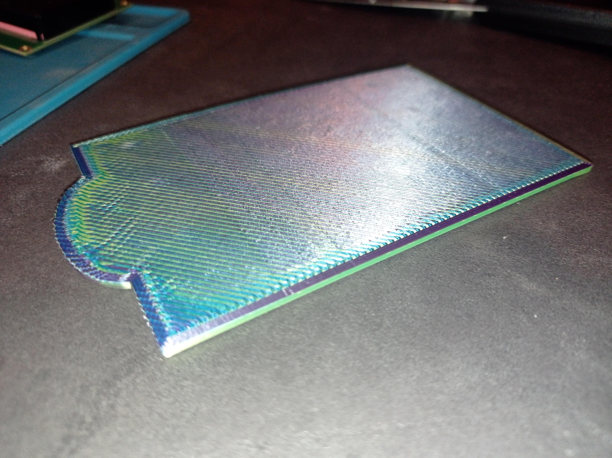
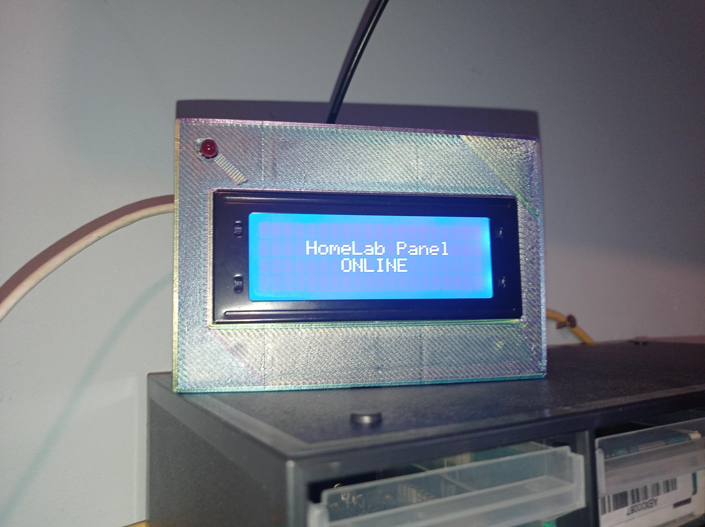

BytesOfProgress
ESP32 Display Server Monitoring
13th January 2024 / 10:30 PM
To keep track if my servers are turned on and connected to my network, I needed a device with a small display, which pings the local IPv4 addresses, and shows the state on the display.
For that, I decided to go with an ESP32 and a 4 / 20 I2C display. I started by connecting the ESP32 to my network with WiFi. After that, I connected the I2C display to the ESP32 and ran the first obligatory "Hello, World!".

Then I needed the ESP32 to ping all my servers once within every time it runs through the loop. For that I used the ESP32Ping library. Now the display needed to show the result of the ping.
Since I run multiple servers, the display needs to switch back and forth between the servers. It will display the state of the next server every 5 seconds.
I also wanted another indicator: LEDs. Whenever a server is offline, a red LED will turn on. To achieve this, I soldered the LED to a cable with a 47Ω (Ohm) resistor and attached it to pin 18 of the ESP32.
// Libraries
#include < WiFi.h>
#include < Wire.h>
#include < LiquidCrystal_I2C.h>
#include < ESP32Ping.h>
// WiFi access
const char* ssid = "SSID";
const char* password = "WPA2_PASS";
// Setting LED pin
const int ledPin = 18;
// Display data
LiquidCrystal_I2C lcd(0x27,20,4);
void setup()
{
// Setting pinMode
pinMode(ledPin, OUTPUT);
lcd.init();
lcd.backlight();
Serial.begin(115200);
WiFi.mode(WIFI_STA);
WiFi.begin(ssid, password);
Serial.println("\nConnecting to WiFi Network ..");
while(WiFi.status() != WL_CONNECTED){
Serial.print(".");
lcd.setCursor(1, 1);
lcd.print("CONNECTION FAILED!");
digitalWrite(ledPin, HIGH);
delay(100);
}
lcd.clear();
Serial.println("\nConnected to the WiFi network");
Serial.print("Local IP: ");
Serial.println(WiFi.localIP());
digitalWrite(ledPin, HIGH);
delay(500);
digitalWrite(ledPin, LOW);
}
void loop()
{
//-------------------------------------------------------------------
// HomeLab Panel
bool panel = Ping.ping("IP", 1);
lcd.setCursor(4, 1);
lcd.print("HomeLab Panel");
if(!panel){
lcd.setCursor(6, 2);
lcd.print("OFFLINE!");
digitalWrite(ledPin, HIGH);
delay(5000);
digitalWrite(ledPin, LOW);
lcd.clear();
}
else{
lcd.setCursor(7, 2);
lcd.print("ONLINE");
delay(5000);
lcd.clear();
}
//-------------------------------------------------------------------
// BytesOfProgress
bool BOP = Ping.ping("IP", 1);
lcd.setCursor(3, 1);
lcd.print("BytesOfProgress");
if(!BOP){
lcd.setCursor(6, 2);
lcd.print("OFFLINE!");
digitalWrite(ledPin, HIGH);
delay(5000);
digitalWrite(ledPin, LOW);
lcd.clear();
}
else{
lcd.setCursor(7, 2);
lcd.print("ONLINE");
delay(5000);
lcd.clear();
}
}
Now I needed a case to hold all this in place. I repurposed a case I constructed with TinkerCAD before, so I can not show the process of creating this.
Download STL's
First I 3D-Printed the lid of the case:
Then it was time to 3D-Print the case itself and assemble all of it inside the case.
back